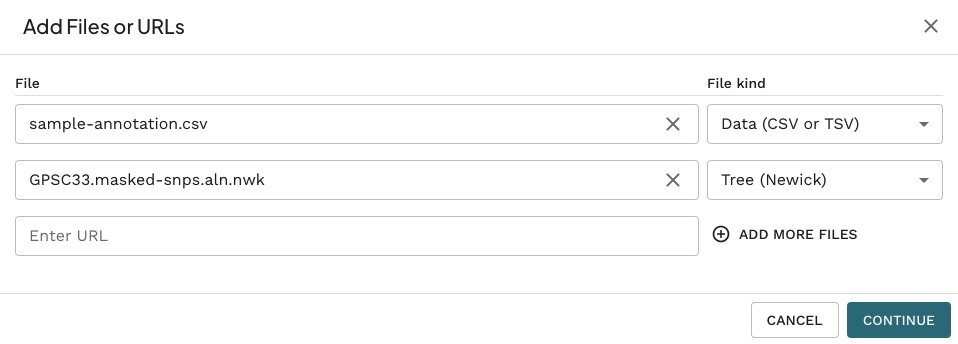
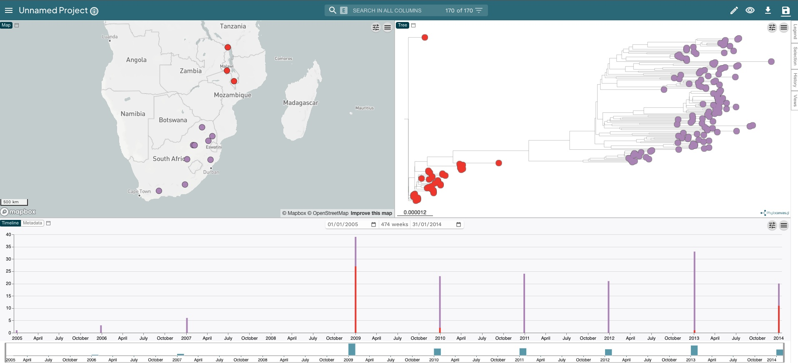

Pneumococcus practical
Building a Phylogenetic Tree
- How can I produce a multiple sequence alignment of pneumococcal sequences?
- How can I build a phylogenetic tree from my alignment?
- How can I visualize and annotate my tree with metadata?
- How can I scale my tree based on sampling dates?
Learning Objectives
- Use nf-core/bactmap to produce a multiple sequence alignment.
- Use Gubbins to identify recombinant regions
- Mask recombinant regions in multiple sequence alignment
- Use IQ-tree for phylogenetic tree inference.
- Visualize and annotate tree in Microreact.
Pneumococcal phylogenetics
Streptococcus pneumoniae (the pneumococcus)is a gram-positive human commensal that also causes a significant disease burden with pneumococcal-related diseases such as pneumonia and meningitis responsible for up 500,000 deaths in children <5 years old each year. The primary pneumococcal virulence factor is the polysaccharide capsule that surrounds the cell. One hundred different polysaccharide capsules (serotypes) have been identified to date and the conjugate vaccines that are routinely administered in vaccination programmes around the world typically target the 10-13 serotypes most prevalent in invasive pneumococcal disease (IPD).
The Global Pneumococcal Sequencing (GPS) project was set up to help understand the global picture of pneumococcal evolution during vaccine introductions using whole-genome sequencing. By the end of 2019, the GPS project had sequenced more than 26,000 pneumococcal genomes from more than 50 countries. As well as investigating the pre- and post-vaccine pneumococcal population structure, 13,454 GPS genomes were combined with an additional 7,000 published pneumococcal genomes to identify clusters of sequences defined as Global Pneumococcal Sequence Clusters (GPSCs). The study identified 621 GPSCs and 35 GPSCs contained more than 100 isolates, accounting for the majority of genomes included in the dataset. These clusters are increasingly being used as the standard method of lineage assignment in pneumococcus as tools now exist to allow new genomes to be assigned to existing clusters or else form the basis of novel clusters.
Uptake and incorporation of DNA from the environment into the pneumococcal chromosome via transformation and homologous recombination has been shown to contribute more to nucleotide variation than mutation in the pneumococcus. As well as being biologically important, recombination obscures the true phylogenetic signal of vertical descent and needs to be accounted for when inferring pneumococcal phylogenies.
Pneumococcal dataset
The dataset chosen for this practical consists of 170 isolates from the GPSC33 lineage. Isolates were collected in South Africa and Malawi as part of the GPS project between 2009 and 2014.
We will work from the course materials folder called 02-prokaryotes, which contains the following files:
reference/GCA_901213345.1_12837_1_32_genomic.fnais the reference genomedatais the directory containing the fastq files we’re going to map to the reference genomesample_annotation.csvis a comma-separated values (CSV) file with information about each sample such as the date of collection and country they were collected in. We will use this table to annotate our phylogenetic trees. This table can also be opened in a spreadsheet program such as Excel.
Generating an alignment
The first step in building a phylogenetic tree is to generate a multiple sequence alignment. To do this, we’re going to map the sequence data for our 170 pneumococcal genomes to a reference, in this case one of the GPS genomes, using the nf-core/bactmap pipeline.
First create a directory a directory for the output:
mkdir -p results/bactmapNow create a samplesheet.csv file containing the sample IDs and the location of the files to be mapped:
python fastq_dir_to_samplesheet.py \
data \
samplesheet.csv \
-r1 _1.fastq.gz \
-r2 _2.fastq.gzThe meaning of the options used is:
datais the directory containing the fastq filessamplesheet.csvthe name of the input file fornf-core/bactmap-r1and-r2the suffixes of the forward and reverse sequence files. By default thefastq_dir_to_samplesheet.pyscript will use everything before this to create the sample IDs
What is nextflow and nf-core
Then run the command to generate a reference based alignment:
nextflow run nf-core/bactmap \
-profile singularity \
--input samplesheet.csv \
--reference reference/GCA_901213345.1_12837_1_32_genomic.fna \
--genome_size 2.0mb \
--outdir results/bactmapnf-core/bactmap has a number of optional arguments but for now these are the ones we’re going to use:
nextflow runis the software and option we’re going to use to run thenf-core/bactmappipeline-profile singularitytellsnextflowto pullsingularitycontainers for each tool in the pipeline. We could also usedockerorconda--input samplesheet.csvtellsnextflowwhich samples to analyse and where they’re located--reference reference/GCA_901213345.1_12837_1_32_genomic.fnais the reference sequence we’re going to map our samples to--genome_size 2.0mbis used by the pipeline to calculate the approximate genome coverage in the fastq files. By default the pipeline uses a tool calledrasusato subsample the fastq files so the genome coverage is <= 100X--outdir results/bactmapis the directory we’re going to save the outputs fromnf-core/bactmapto
Visit the nf-core/bactmap page for further information on running the pipeline with different options.
We can look at the output directory (results/bactmap) to see the various directories containing output files created by nf-core/bactmap:
bwa/indexcontains the index of the reference sequencefastpcontains the results of the trimming and adapter removal performed byfastpfastqccontains QC metrics for the fastq files generated withfastQCmultiqccontains a html file containing summaries of the various outputspipeline_infocontains information about the pipeline runpseudogenomescontains consensus fasta files for each sample which have the sample variants compared to the reference included. The alignment we’ll use for the next step can also be found in this directory (aligned_pseudogenomes.fas)rasusacontains the subsampled post-trimmed fastq filessamtoolscontains the sorted bam files and indices created bybwaandsamtoolsas part of the mapping processsnpsitescontains a variant alignment file created fromaligned_pseudogenomes.fasthat can be used as input for tree inference toolsvariantscontains filteredvcffiles which contain the variants for each sample
- fastq
- fasta
- bam
- vcf
Identifying recombination
Gubbins (Genealogies Unbiased By recomBinations In Nucleotide Sequences) is an algorithm that iteratively identifies loci containing elevated densities of base substitutions while concurrently constructing a phylogeny based on the putative point mutations outside of these regions. We’re going to use Gubbins to identify the recombinant regions in the alignment we generated using nf-core/bactmap.
First create a directory a directory for the output:
mkdir -p results/gubbinsNow move the aligned_pseudogenomes.fas created by nf-core/bactmap to results/gubbins:
mv results/bactmap/pseudogenomes/aligned_pseudogenomes.fas results/gubbinsBefore we run Gubbins, we need to remove the reference sequence from the alignment. Change directory to results/gubbins and run the following command:
cd results/gubbins
seqkit grep -v \
-p 'CAAKRB010000001.1|CAAKRB010000002.1|CAAKRB010000003.1|CAAKRB010000004.1|CAAKRB010000005.1|CAAKRB0...' \
aligned_pseudogenomes.fas > aligned_pseudogenomes_noref.fasNow we can run Gubbins:
run_gubbins.py \
--prefix GPSC33 \
--first-tree-builder rapidnj \
--first-model JC \
--tree-builder raxmlng \
--model GTR \
--threads 8 \
aligned_pseudogenomes_noref.fasThe meaning of the options used is:
--prefix GPSC33is the prefix of theGubbinsoutput files--first-tree-builder rapidnjis the name of the phylogenetic inference tool we’ll use to build the starting tree for Gubbins.rapid-njis a quick way to generate a starting tree for Gubbins--first-model JCis the nucleotide substitution model used to calculate the starting tree, in this instance Jukes-Cantor--tree-builder raxmlngis the name of the phylogenetic inference software Gubbins will use to build the rest of the trees.raxml-NGis a commonly used tool designed to work with large genome datasets--model GTRis the model to thatraxml-NGwill use, in this case General time reversible--threads 8is the number of threads thatGubbinswill use for parallelisationaligned_pseudogenomes.fasis the alignment file created bynf-core/bactmap
- Jukes-Cantor (JC)
- General time reversible (GTR)
- Hasegawa, Kishino and Yano (HKY)
We can look at the output directory (results/gubbins) to see the various output files created by gubbins:
GPSC33.recombination_predictions.emblcontains the recombination predictions in EMBL file formatGPSC33.recombination_predictions.gffcontains the recombination predictions in GFF formatGPSC33.branch_base_reconstruction.emblcontains the base substitution reconstruction in EMBL formatGPSC33.summary_of_snp_distribution.vcfcontains the VCF file summarising the distribution of point mutationsGPSC33.per_branch_statistics.csvcontains the per branch reporting of the base substitutions inside and outside recombination eventsGPSC33.filtered_polymorphic_sites.fastais a FASTA format alignment of filtered polymorphic sites used to generate the phylogeny in the final iterationGPSC33.filtered_polymorphic_sites.phylipis a Phylip format alignment of filtered polymorphic sites used to generate the phylogeny in the final iterationGPSC33.final_tree.trecontains the final phylogeny in Newick format; branch lengths are in point mutationsGPSC33.node_labelled.final_tree.treis the final phylogenetic tree in Newick format but with internal node labels; branch lengths are in point mutationsGPSC33.logis a log file specifying the software used at each step of the analysis, with accompanying citations
Visualizing recombinant regions
The outputs from Gubbins can be visualised using Phandango. Click on the link then drag the following files onto the Gubbins page:
GPSC33.final_tree.treGPSC33.recombination_predictions.gff
You should see something like this:

Masking recombination
Rather than using the tree produced by Gubbins, we’re going to infer our own phylogenetic tree. Before we do this, we have to mask the regions of recombination identified by Gubbins in our alignment using a script included as part of the Gubbins package:
mask_gubbins_aln.py \
--aln aligned_pseudogenomes_noref.fas \
--gff GPSC33.recombination_predictions.gff \
--out GPSC33.masked.alnPhylogenetic tree inference
There are a number of different tools for phylogenetic inference via maximum-likelihood and some of the most popular tools used for phylogenetic inference are FastTree, IQ-Tree and RAxML-NG. For this practical, we’re going to use IQ-Tree.
First, create a directory for the IQ-tree analysis and copy the masked alignment into the new directory:
mkdir -p results/iqtree
cp results/gubbins/GPSC33.masked.aln results/iqtreePhylogenetic inference software such as IQ-tree typically takes as input an alignment of just the variant sites in a multiple sequence alignment. So, before running IQ-tree, we need to extract the variant sites from the masked alignment. To ensure that the branch lengths are correctly scaled, we also need to tell IQ-tree how many invariant or constant sites there are in our multiple sequence alignment. To do both those things, we can use a tool called snp-sites. Run the following commands in the results/iqtreedirectory:
snp-sites \
GPSC33.masked.aln \
-o GPSC33.masked_snps.aln
snp-sites \
-C GPSC33.masked.aln \
> GPSC33.constant_sites.txtNow we can run IQ-tree using the two files we just created with snp-sites as input:
iqtree \
-fconst $(cat GPSC33.constant_sites.txt) \
-s GPSC33.masked_snps.aln \
-nt auto \
-ntmax 8 \
-mem 8G \
-m GTR \
-bb 1000The meaning of the options used is:
--fconst $(cat GPSC33.constant_sites.txt)tellsIQ-treeto extract the number of invariant sites from the file we created usingSNP-sites-s GPSC33.masked_snps.alnis the the variant site alignment-nt autoautodetects the number of available cores-ntmax 8is the maximal number of cores to use-mem 8Gis the maximal RAM usage in GB-m GTRtellsIQ-treeto use the General time reversible model of nucleotide substitution-bb 1000is the number of ultrafast bootstraps to run
We can look at the output directory (results/iqtree) to see the various output files created by IQ-tree:
GPSC33.masked_snps.aln.iqtreeis a text file containing a report of the IQ-Tree run, including a representation of the tree in text format.GPSC33.masked_snps.aln.treefileis the estimated tree in NEWICK format. We can use this file with other programs, such asFigTree, to visualise our tree.GPSC33.masked_snps.aln.logis the log file containing the messages that were also printed on the screen.GPSC33.masked_snps.aln.bionjis the initial tree estimated by neighbour joining (NEWICK format).GPSC33.masked_snps.aln.mldistis the maximum likelihood distances between every pair of sequences.GPSC33.masked_snps.aln.ckp.gzis this is a “checkpoint” file, which IQ-Tree uses to resume a run in case it was interrupted (e.g. if you are estimating very large trees and your job fails half-way through).
Visualization and annotation in Microreact
There are many programs that can be used to visualise phylogenetic trees. To visualise our phylogenetic tree, along with the associated metadata, we’re going to use an online tool called Microreact. Microreact allows for quick, attractive visualisations of phylogenetic trees and metadata. Before we upload our data we need to change file suffix on our phylogenetic tree so it’s recognised by Microreact:
mv GPSC33.masked_snps.aln.treefile GPSC33.masked_snps.aln.nwkNow, click on the Microreact link. This will take you to the Microreact homepage. To upload our tree (GPSC33.masked_snps.aln.nwk) and metadata (sample_annotation.csv), click UPLOAD then drag and drop the two files together (you may need to copy one of the files to the location of the other). You should see the following:

Click CONTINUE and then click CONTINUE on the two subsequent prompts. You should know see a page divided into three sections: a map showing where the samples were collected, the phylogenetic tree with the serotype of the samples annotated on the tree and a timeline of when the samples were collected.

Now let’s change what metadata we annotate on the phylogenetic tree. Click the “Eye” on the top left of the screen and change In_Silico_Serotype to Country. Now the tree looks a bit more interesting as we can see that the two clades within the tree correspond to where the samples were collected (red for Malawi and mauve for South Africa).

Key Points
- To build a phylogenetic tree we need a multiple sequence alignment of the sequences we want to infer a tree from.
- Alignments are usually done against a reference genome.
- We can use the pipeline
nf-core/bactmapto produce a multiple sequence alignment. - We can identify and remove regions of recombination from our multiple sequence alignment usinf
Gubbins
- The software
IQ-treecan be used for inferring trees from an alignment using maximum likelihood. Although we used the GTR model, this software supports a wide range of substitution models. - We can use
Microreactto quickly create attractive visualisations of our trees and associated metadata.